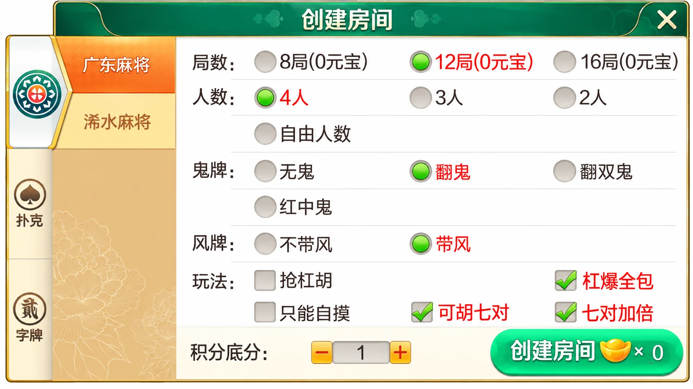
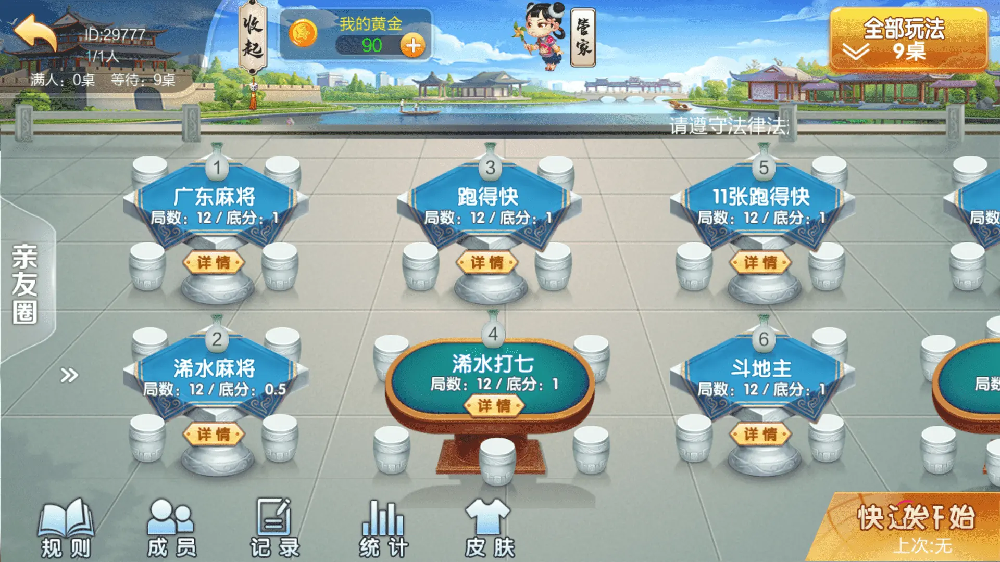

七星系列 · 地区界面与技术笔记
七星组合版：广东麻将与浠水玩法目录
区分玩法清单、界面入口与桌台数量，整理组合版本的目录差异。
广东麻将与浠水玩法组合
这个版本把广东麻将、浠水麻将和浠水打七放在同一套入口中。本文使用“广东麻将与浠水玩法组合”来描述内容，避免把两个玩法标签连写成行政地名。
文字清单列有8项：广东麻将、浠水麻将、浠水打七、11张跑得快、斗地主、五十K、牛牛和炸金花。桌台图还显示一个单独的“跑得快”入口，与“11张跑得快”同时存在。因此清单数量与界面入口需要分开记录；画面右上角的“9桌”代表桌台数量，不能单凭这个数字证明有9种独立规则。
麻将配置与组合桌台
广东麻将面板提供2人、3人、4人及自由人数选项，同时列出鬼牌、风牌和若干玩法开关。桌台页同时展示广东麻将、浠水麻将、浠水打七与扑克入口，并显示局数与底分摘要。不同玩法共用房间大厅，不等于共用同一份规则配置。




规则图为AI整理的局部画面，桌台图仅压缩。保留群组ID29777、桌台序号、黄金及底分等原有信息，不当作个人账号替换，不以修图改变实际模式。图片并不能说明积分或黄金是否可兑换。
分别保存清单与可见入口
目录整理时可以同时保存版本清单和当前界面入口，再输出两者差集。清单中存在但当前画面没有出现的内容，可能在滚动区域或其他分类；界面中额外出现的名称，也可能属于不同版本。差集用于提示核对，不直接认定缺失实现或新增功能。
下面是独立目录对照示例，不是原工程代码。它仅做完整名称匹配与首尾空白整理，不自动合并“跑得快”和“11张跑得快”。合并数量是名称集合大小，不能替代已经验证的可玩游戏数量。
export function compareCatalog(listed, visible) {
for (const items of [listed, visible])
if (!Array.isArray(items) || items.some(x => typeof x !== 'string' || !x.trim()))
throw new TypeError('Expected names');
const a = new Set(listed.map(x => x.trim()));
const b = new Set(visible.map(x => x.trim()));
return {
onlyListed: [...a].filter(x => !b.has(x)),
onlyVisible: [...b].filter(x => !a.has(x)),
unionCount: new Set([...a, ...b]).size
};
}
独立目录对照示例通过10项断言，覆盖差集、去重、空白、空集合和无效输入。若后续获得正式游戏标识，应使用标识对照，显示名称仅作为辅助说明。
对外展示时，先给出明确列出的玩法，再单独说明补充入口。这样既能保留实际内容差异，也不会把“桌数”“菜单项数”“规则数量”混为一谈。本文不提供投注配置、交易或运营部署教程。